| Authorization Features | ||
Email / Password on Host Appliance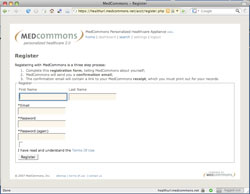The user registers directly with the appliance hosting the patient's HealthURL. OpenID Link to Host Appliance Account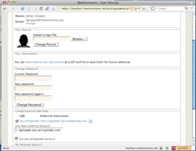After direct registration, the user has the option to link their account to any OpenID provider that is trusted by the Host Appliance administrators. OpenID providers must first be whitelisted in the Appliance Console. This is a simple, practical and standards-based federated identity system. OpenID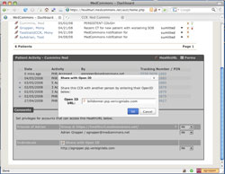A user with access to the Consents can invite anyone using their OpenID. Whitelisting by the host appliance is not required. MedCommons Coupon with One-Time Password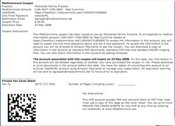The MedCommons Coupon enables any health care service provider to deliver electronic documents to the patient and charge for the service. MedCommons Claim with One-Time Password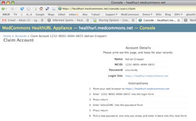This administrative Support Console interface enables the host of a HealthURL account to grant control of an account to the patient directly without payment. S/Key on Registration Receipt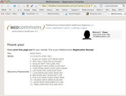Account owners (typically the patient or a legal guardian) are prompted to print their Registration Receipt as absolute proof of their identity. The cryptographic keys can be used, one-by-one to prove identity to support personnel managing the host HealthURL appliance. The S/Key technology also protects your account from unauthorized access by host support personnel. Tracking Number and PIN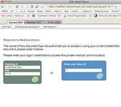Anyone can be granted access to a HealthURL using a tracking number and PIN combination. Tracking numbers can be entered directly on the HealthURL host appliance or indirectly via www.medcommons.net. The PIN can be securely shared over the phone, text message or via a printed receipt. OAuth Single Sign-On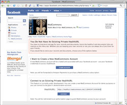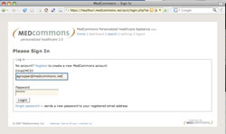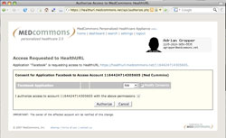Access to a HealthURL account can be granted to an external program or application such as the MedCommons Application for Facebook in a simple three-step process. First, the external application is directed to the HealthURL. Second, the user is challenged to prove that they already have access to the HealthURL and the right to modify Consents. Finally, the user is asked to authorize the change in Consents requested by the external application. Coded Fax Cover Sheet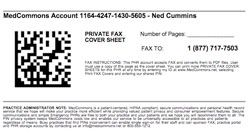Anyone can be authorized to add records to a HealthURL using customized coded fax cover sheets that can be reused as neccessary. Optional fields include an email to be notified whenever a document is added to the account and a PIN reminder that allows the user to read account as well as to add to it. Group on Host Appliance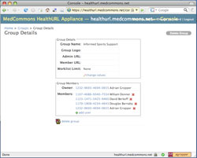Host appliance administrators can create groups of users that share access to the same set of patient accounts for cross-coverage and integration into practice workflow. Facebook Care Team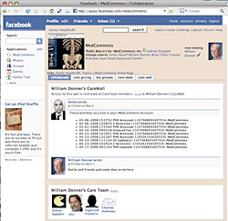Once the MedCommons Application on Facebook is listed in a HealthURL Consents, the patient's supports can be invited to participate as a Care Team. They will benefit from Facebook's extensive authentication and notification features. Amazon Payments Account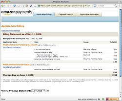HealthURL accounts can also be controlled indirectly through Amazon Payment accounts. Compared to Facebook Application control, the benefit of this approach is added security and the ability to charge the end-user (typically the patient or guardian) for information services-related expenses. Post to CCR Commons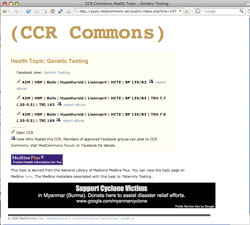Altruistic sharing and self-help benefit from the broadest possible access to the Web. CCR Commons is a free site sponsored by MedCommons that enables any authorized user to post a redacted and anonymous copy of their medical records. The CCR Commons site is organized around the 750 topics defined by the National Library of Medicine MedLine Plus project. To limit spam and abuse, postings are moderated by Facebook groups connected with specific topics. |
| © MedCommons Inc. 2009 | |